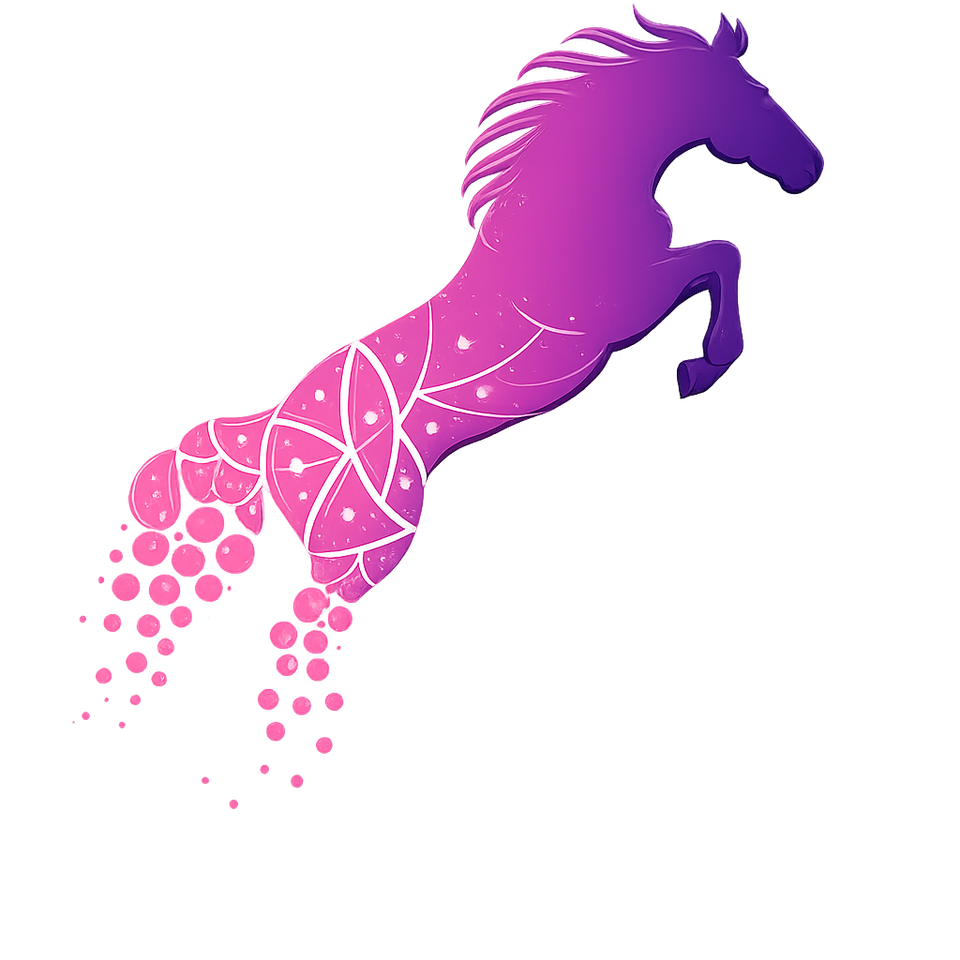

Тема доклада
Конгресс ANIMALSTEM объединяет ветеринарных врачей, учёных и индустрию вокруг клеточных технологий — от фундаментальных исследований до практики в клинике.

Один насыщенный день — наука, клинический опыт и профессиональные связи.
Пленарные доклады о развитии регенеративной медицины — от учёных, вузов и грантовых проектов. Актуальные исследования из первых рук.
Разбор реальных случаев применения регенеративной терапии у лошадей, мелких домашних животных и КРС — методики, которые работают в клинике уже сегодня.
Отраслевые сессии партнёров и нетворкинг с врачами, исследователями и производителями — контакты и партнёрства, которые сложно найти онлайн.
Участие бесплатное, но мест в зале ограниченное количество.
Ссылка на подключение будет направлена на адрес, указанный при регистрации, за несколько дней до конгресса.
Ключевые направления программы — регенеративные технологии в ветеринарии и медицине человека.
Применение мезенхимальных стромальных клеток (МСК) в ветеринарии и медицине
Регенеративная терапия в лечении и реабилитации лошадей
Клинический опыт регенеративной терапии у мелких домашних животных
Регенеративные технологии в животноводстве и лечении крупного рогатого скота
Современные подходы к лечению заболеваний копыт у сельскохозяйственных животных
Клиническое применение методов регенеративной медицины в медицине человека
Ученые, практикующие ветеринарные врачи и эксперты отрасли из России и других стран. Нажмите на карточку, чтобы узнать подробнее.
Финальный состав спикеров и темы уточняются — ниже общая структура программы.
Подробная программа с точным расписанием и составом спикеров будет опубликована позднее.
Конгресс проходит при участии профильных вузов, ассоциаций и компаний отрасли.
Хотите стать партнёром конгресса? Напишите на conf@reg-vet.ru
Санкт-Петербургский государственный университет ветеринарной медицины.
196084, Санкт-Петербург, ул. Черниговская, д. 5
Организаторы конгресса — Евразийская Ассоциация регенеративной ветеринарной медицины и Ассоциация врачей конной медицины (АВКоМ)
При поддержке Ветакадемии СПб, «Стэм Реновацио» и «Элайя-Мед»
Заполните короткую форму регистрации, чтобы забронировать место и получать обновления о программе.
Зарегистрироваться →После регистрации подпишитесь - там первыми публикуем программу, спикеров и все изменения.